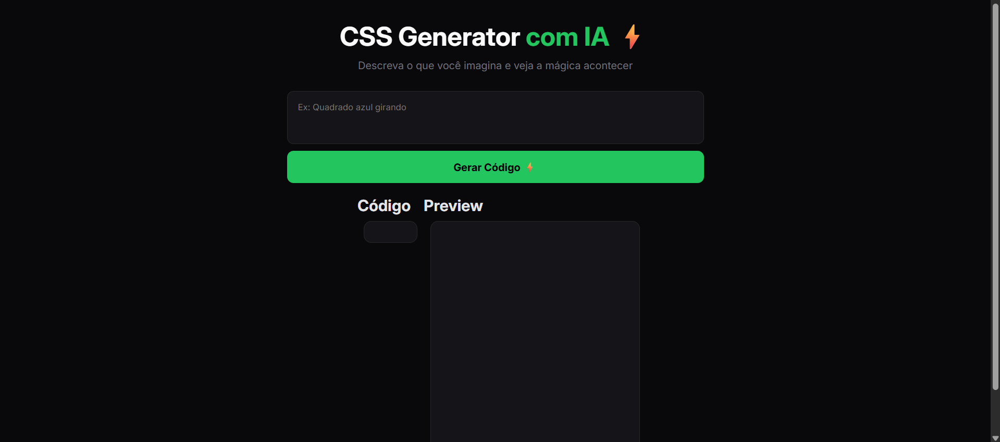
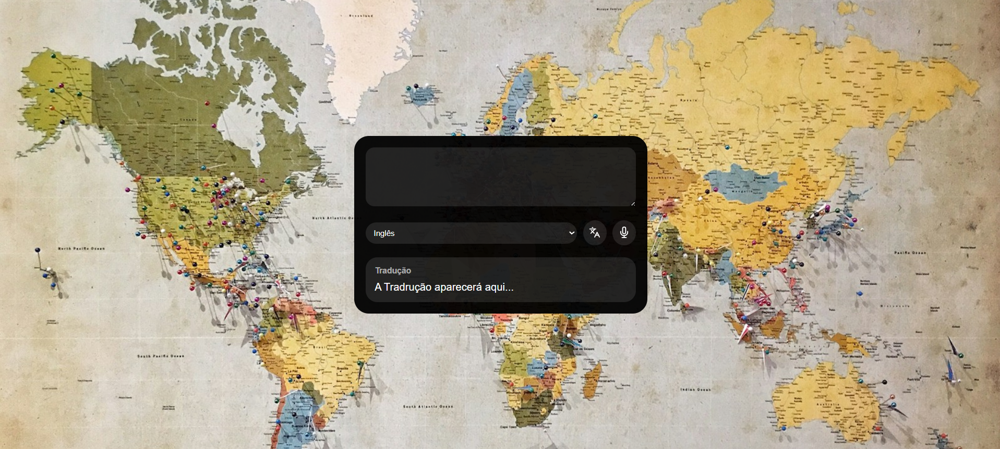
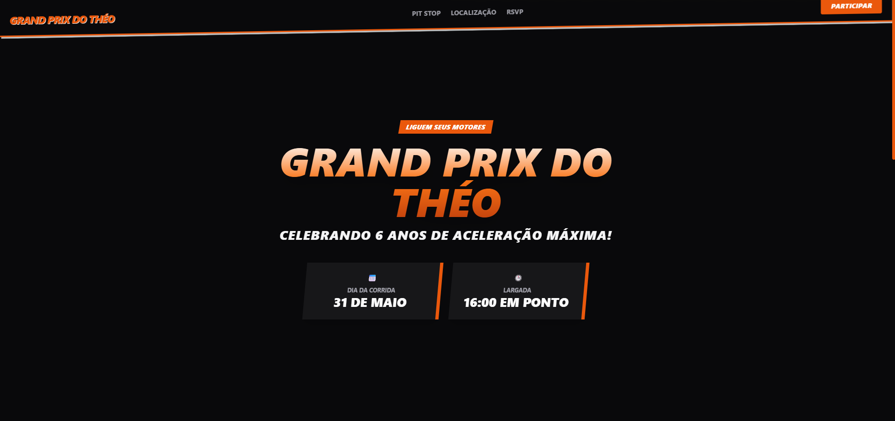

Portfólio
Meus Projetos
Aqui estão alguns dos projetos que desenvolvi. Cada um representa um desafio
único e uma oportunidade de aprendizado.

CSS Generator
CSS Generator com IA é uma ferramenta web que permite ao usuário descrever em linguagem natural um elemento visual (ex: "Quadrado azul girando") e, ao clicar em Gerar Código, a IA gera automaticamente o CSS correspondente. A interface exibe o resultado em duas abas: Código (o CSS gerado) e Preview (visualização ao vivo do elemento estilizado).
 Código
Demo
Código
Demo

Tradutor de Idiomas
Tradutor com IA é uma ferramenta web inteligente onde o usuário digita ou fala um texto, seleciona o idioma de destino e, ao clicar em Traduzir, a IA gera uma tradução natural e contextual automaticamente. O resultado aparece em tempo real no painel inferior, com suporte a múltiplos idiomas. Simples, moderno e poderoso !
Código
Demo

Grand Prix do Theo
Um convite digital interativo e responsivo criado para o aniversário de 6 anos do Théo. O simula uma experiência de "Grand Prix" com o tema Hot Wheels, incluindo animações, mapa integrado e formulário de confirmação de presença (RSVP). Grande ideia para captação de leads !
Código
Demo